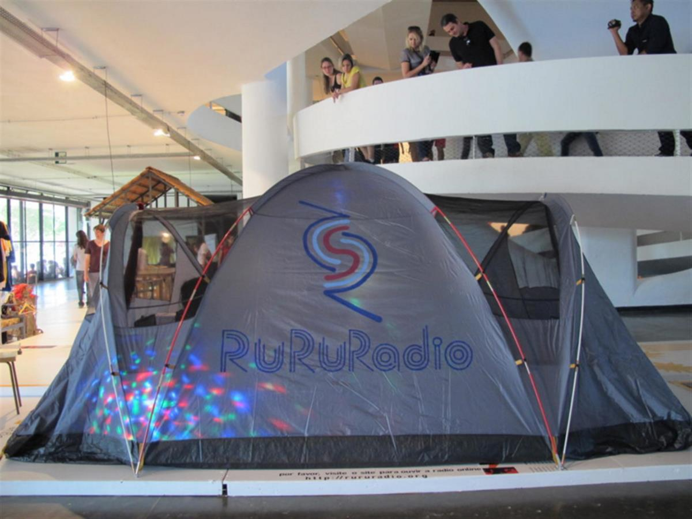
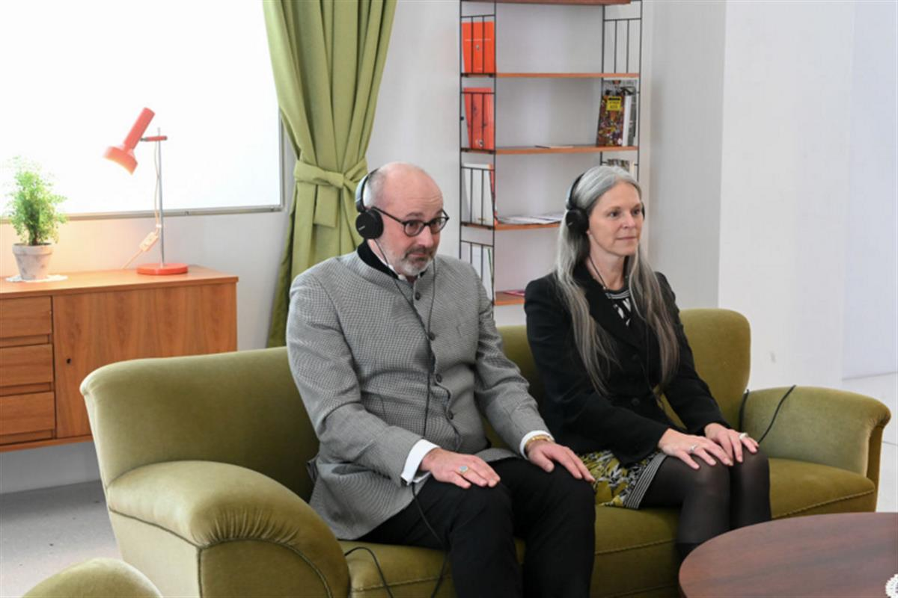
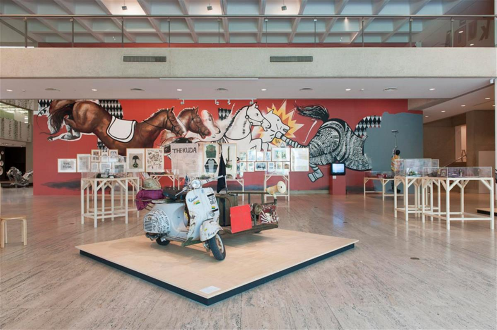

ruangrupa, 2019 Reza Afisina, Indra Ameng, Farid Rakun, Daniella Fitria Praptono, Iswanto Hartono, Ajeng Nurul Aini, Ade Darmawan, Julia Sarisetiati, Mirwan Andan Photo: Gudskul / Jin Panji
Ruangrupa, the Collective in Charge of the Next Documenta, Reflect on What It Means to Curate in Times of Crisis
The Indonesian artistic collective that is helming documenta in 2022 weighs in on self-organization in upheaval.
ruangrupa, June 4, 2020
ruangrupa is a Jakarta-based collective established in 2000. Its nine members were selected last year as the curator of the 15th edition of documenta in Kassel, which is set to take place in 2022. Here, the collective discusses what it’s like to organize a major contemporary art exhibition at a time of unprecedented change.
As ruangrupa looks towards documenta 15 in 2022, we are rethinking structures for the production of contemporary art while, just like the rest of the world, we shift our practices online. When COVID-19 broke out in Indonesia, we tried to help combat the systemic breakdown by turning some of our spaces into emergency kitchens and making masks and hazmat suits. Now that the supply chain can cope on a mass scale, we are further thinking of what we can do next for the ecosystem around us.
Patriarchy, capitalism, and colonialism have never seemed so problematic as under the current challenging times. The inequality those bigotries bring are becoming very visible—we hope that business as usual will not continue after this. Before COVID-19, ruangrupa was already concerned about issues that have now just become more visible. We have long been questioning with our practice the usual working modes within the economy and institutions and hierarchical structures as well as aspects of the global and the local.
In these times, our core concept for documenta 15, the Indonesian term oflumbung, rings louder than ever. lumbung, which is directly translatable to “rice barn,” refers to a collective pot or accumulation system where crops produced by a community are stored as a future shared common resource. It is about generosity and empathy. The need for lumbung in this current time of upheaval is paramount, and it is clear right now that we cannot afford the time to prepare. We need to act as soon as possible.
In ruangrupa, we rarely have hierarchy. All decisions are made by consensus, so thinking together both in physical spaces and online is a process-based effort. It has long been our focus to diminish hierarchy in our structure, considering it an inheritance of patriarchy, something that is not so different here in Indonesia as it is in the Western world. This has also become increasingly urgent in this current crisis. We all need to become more inclusive to the different types of lives we lead and caring for one another and an awareness of mental health are both very important, and so, productivity and efficiency cannot be the only metrics with which we measure success.

ruangrupa’s work at the São Paulo Art Biennial in 2014. Photo: ruangrupa.In the lead up to 2022, we had been planning on holding assemblies every two months in different places around the world beginning last year, but now we have had to stretch that concept into a flatter understanding of time and space. We have had to change our entire understanding of assembly. Instead of these physical gatherings, like many people around the world, we gather on Zoom, congregating three to five days a week with around 15 or 20 of our collaborators for around four hours a day including workshops in smaller groups.
Like a lot of art collectives in Indonesia, it’s part of our practice to transform domestic spaces. We rent houses and transfer from house to house after turning them into a space that is more public. Consequently, we understand the term “public” differently than public institutions. We just open up spaces without calling them an “exhibition space” or “residency space,” or boxing it in with such terms. Activities happen there. It is not metaphoric; it is a space that we think can truly function.

Martin Eberle, director of the Museumslandschaft Hessen Kassel, and Sabine Schormann, director general of the documenta, sit with headphones on furniture exhibited by the new documenta director Ruangrupa in the permanent exhibition “about: documenta” in the Neue Galerie. Photo: Uwe Zucchi/picture alliance via Getty Images.We are in the process of opening that type of space in Kassel because, again, that is how we work, in preparation of documenta 15 but also in general. Making a space to ground ourselves in a local context is something we always strive for, but one of our biggest challenges is now to adapt gatherings, which is very embodied in our practice, to the present situation. In any case, we are establishing ruruHaus in Kassel, a house that will function like those we open in Indonesia. It is not our intention to only innovate, but to support and co-exist with what is already existing in Kassel. However, the pandemic will in part determine when exactly ruruHaus as a real space.
This current situation makes us need to rethink our concept to some extent, but it is not a deadlock and there are many ways to handle it. We are not afraid. It is good to have to think about transforming processes, which will include for us the production of spaces. Maybe we do not need so many spaces right now. Maybe we can shift this power into a better place. COVID-19 has changed a lot of our minds about production as knowledge-sharing and, in this way, it opens up more possibilities. What COVID-19 has made us realize is that we are all global. At the same time, it shows just how important the local is.

Installation view of ruangrupa. The 7th Asia Pacific Triennial of Contemporary Art (APT7). Photo courtesy ruangrupa.We hope that as a result of this crisis, the misunderstanding that there is only one way to approach things will be gone. In the art world, we hope that there will be a lot more openness to other practices. The shift towards knowledge- or information-based practices and away from object-making is something we have practiced, but it has never been so clearly necessary to so many. For documenta fifteen, we will focus on art practices that depend on accumulations of value in time, knowledge, and dissemination. How can we invest in those types of practices? What does investment mean? How can an exhibition be? How these current shifts in working will meet these factors of exhibition-making and become translated into documenta 15 is what we are most concerned about now.
ruangrupa exists as living proof that work in the arts field can be done. Looseness and informality have always been a part of how we work. If you try to put our members into an office environment, you will quickly realize that it is our kryptonite. We are not going to function. More and more people join us in this mixing of the professional and domestic as life and work now enters the home during lockdown, but this is something we have long been interrogating in both its positive and negative aspects. And while it is not all romantic, we are enjoying the shift we are experiencing right now. Whether it is going to address certain problems that the world is facing, that we really do not know. Our way is not all that matters to us; the practice of seeing different ways of thinking and creating is of equal importance. We hope that we can learn from each other.
As told to Kate Brown
SOURCE: ARTNET NEWS